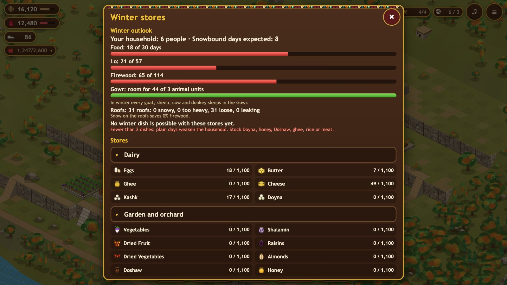

Goods and food
Walnuts, Pomegranate Juice, Klash and the four fruits are the village's trade goods. Everything else is the household's winter stores: food, fodder for the herd, and firewood. Each kind of food has its own room in the stores; the Storeroom adds more. Some food spoils a little every day, so eat or preserve it first.

Trade goods
| Good | What it is for | Per Klash | |
|---|---|---|---|
| Walnuts | Build currency | 25 | |
| Pomegranate Juice | Trains troops | 25 | |
| Klash | Premium: finish builds instantly, buy almost anything in the Bazaar | – | |
| Grapes | Trade fruit | 8 | |
| Pears | Trade fruit | 8 | |
| Mulberries | Trade fruit | 8 | |
| Figs | Trade fruit | 6 | |
| Wool | Hevaar: felt armor for your troops | 6 | |
| Dairy | Hevaar: cheaper troop training in summer | 6 |
Winter food
"Feeds" is how many person-days of food one unit gives. The household eats in this order: what spoils first, grain last (the seed is kept).
| Food | About it | Feeds | Spoils a day | Per Klash | |
|---|---|---|---|---|---|
| Fish | Caught in the Sirwan; spoils fast unless dried | 0.8 | 30% | 6 | |
| Vegetables | Fresh from the garden; spoil fast | 0.3 | 15% | 15 | |
| Eggs | Fresh food; a tenth spoils every day | 0.2 | 10% | 20 | |
| Butter | Winter food from the skin churn | 1.5 | 1% | 4 | |
| Cheese | Winter food from the Dairy Room | 1 | keeps | 5 | |
| Kashk | Dried buttermilk: keeps all winter | 1 | keeps | 5 | |
| Doyna | Yogurt and wheat, sun-dried in summer (Tarkhineh) | 1.5 | keeps | 4 | |
| Shalamin | Fermented turnip, made in the dry season | 0.8 | keeps | 6 | |
| Dried Fruit | Fruit dried on the roofs in summer and autumn | 0.6 | keeps | 8 | |
| Raisins | Grapes dried on the roofs | 0.8 | keeps | 6 | |
| Dried Vegetables | Tomatoes and vegetables dried for Dolme | 0.5 | keeps | 8 | |
| Dried Fish | Fish dried and smoked in summer: keeps through the winter | 1.2 | keeps | 4 | |
| Almonds | Almonds from the garden | 1 | keeps | 6 | |
| Doshaw | Mulberry molasses | 1.2 | keeps | 4 | |
| Honey | From the beehives | 1.2 | keeps | 4 | |
| Ghee | Butter cooked down: keeps all winter | 2 | keeps | 3 | |
| Preserved Meat | Cooked down in autumn and kept in fat | 2 | keeps | 2 | |
| Rice | Bought from the lowlands before the pass closes | 1 | keeps | 10 | |
| Grain | Bread for the winter, and seed for the spring | 1 | keeps | 12 |
Fodder and firewood
| Good | About it | Per Klash | |
|---|---|---|---|
| Lo | The mountain plant gathered at the end of summer: the herd's winter food | 15 | |
| Straw | Wheat straw from the harvest: winter fodder, less filling than Lo | 20 | |
| Leaf Fodder | Mulberry leaves and branches: only a little each day, too much can kill a goat | 20 | |
| Firewood | Keeps the house warm; dung cakes from the herd count too | 15 |
The household burns 3 firewood a day in winter, twice as much on snowbound days. Without buildings there is room for 100 of each food, 50 fodder and 100 firewood.